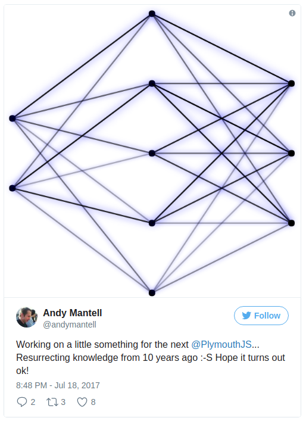
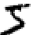
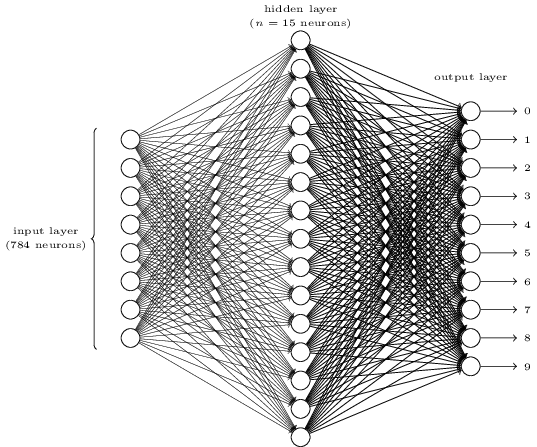

name: cover class: center, middle # Intro to Neural Networks <br><small>- a primer on back propagation</small> Andy Mantell - Contract frontend developer<br> (@andymantell) --- layout: true class: center, middle, inverse --- # Quick! You need to prep a talk! --- class: middle > "Next time you should do a talk on something that you already know and are good at" <span style="text-align: left">Ashleigh Mitchell, 2016</span> ---  ---  --- <div class="constrain">  </div> --- <video src="assets/images/difficult.mp4"></video> <p>When you look away for a second during class...</p> --- class: center, middle # Anyway, here goes... --- # What the heck is a neural network?  --- # What the heck is a neural network?  --- # What is a neural network _not_? ## A model of the human brain Neural networks are a vastly simplified model _inspired by_ **some** of the things we know about the brain However neurons in the brain are incredibly complex in their own right, and we don't fully understand single neurons yet! (Chemical based synapses, about quantum microtubules for a taster!) --- # What are they good at? Neural networks aren't black boxes of magic Artificial Intelligence. They lend themselves very well to solving particular kinds of problems. --- # Classification problems <div class="constrain">  (28x28 pixel image = 784 pieces of input data) <br>  </div> from http://neuralnetworksanddeeplearning.com/chap1.html --- # Training --- layout: false # Training Take your proposed data set and split it up (Say, 90% for training) We won't use all of it to train the network. The remaining 10% will be used to validate the network after training. --- layout: false .left-column[ ## Feed forward ] .right-column[ ```md for each layer for each neuron activation = sigmoid(sum of all inputs * weights) ``` **Sigmoid** Used to constrain activations rather than letting them run wild  ] --- .left-column[ ## Feed forward ## Calculate errors and propagate back ] .right-column[ ```md for each output neuron compare desired value to actual value adjust weight of connections feed some of the error back through the network change weights as you go ``` Note: This is the hard bit! (I'm not doing it quite right at the moment :-) ] --- .left-column[ ## Feed forward ## Calculate errors and propagate back ## Repeat! ] .right-column[ Repeat until errors reach a low enough level, and then stop Known as "Gradient descent"  ] --- .left-column[ ## Feed forward ## Calculate errors and propagate back ## Repeat! ] .right-column[ Repeat until errors reach a low enough level, and then stop Known as "Gradient descent"  ] --- # Design considerations How many hidden layers and neurons? More is not necessarily better - can result in a network which "over fits" the training data and fails to capture the _general rules_ It will perform superbly against the training data but fail to make predictions on new inputs --- # Demo time! _Work in progress_ Be nice :-) --- # Don't look too hard The code is all on GitHub: https://github.com/andymantell/back-propagation But it's proper dirty, and badly structured. Don't look too closely :-) --- .left-column[ ## Unfamiliar problems! ] .right-column[  ] --- .left-column[ ## Unfamiliar problems! ## Mathematicians! ] .right-column[ Mathematicians write code for mathematicians! Can be pretty hard to read if you aren't up on it. ```c NeuralNetwork :: backpropagate() { double dw; // temporary variable - dE/dw[i][j] for_k { dy[k] = y[k] - O[k]; dx[k] = ( dy[k] ) * y[k] * (1-y[k]); } for_j { double t = 0; for_k t = t + ( dx[k] * w[j][k] ); dy[j] = t; dx[j] = ( dy[j] ) * y[j] * (1-y[j]); } for_j for_k { dw = dx[k] * y[j]; w[j][k] = w[j][k] - ( RATE * dw ); } for_i for_j { dw = dx[j] * I[i]; w[i][j] = w[i][j] - ( RATE * dw ); } for_k { dw = dx[k] * (-1); wt[k] = wt[k] - ( RATE * dw ); } for_j { dw = dx[j] * (-1); wt[j] = wt[j] - ( RATE * dw ); } } ``` ] --- class: center, middle, inverse # Reality --- # Stand on the shoulders of giants Other far cleverer people have already done all this stuff. Use it instead! - https://www.ibm.com/watson/ - https://www.tensorflow.org/ - https://azure.microsoft.com/en-gb/services/cognitive-services/ - https://openai.com/ --- # But... --- class: middle > "It's a rite of passage for a developer to write a shit [_something_] in [_language of choice_] at least once in their career" > "Provided they throw it away afterwards!" <span style="text-align: left">Andy Mantell, 2010</span> <small>_(Ok, I made that date up, but I remember saying it!)_</small> --- # I'll be back... <video src="assets/images/illbeback.mp4"></video> --- # Questions? ## Links: Code: https://github.com/andymantell/back-propagation Demo: https://andymantell.github.io/back-propagation/ ## Further reading: [Using neural nets to recognize handwritten digits](http://neuralnetworksanddeeplearning.com/chap1.html)